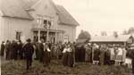
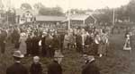
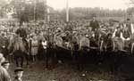
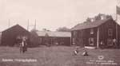

| Hembygdsfest och
Kryckeståt vid Privatskolan och Hembygdsgården på Rabo. Idag: Område väster om Ol-Larsvägen |
|
|
Hembygdsfest 

|
[Klicka
på bilderna för att förstora]
Kryckeståt  Ockelbo Hembygdsgård  |